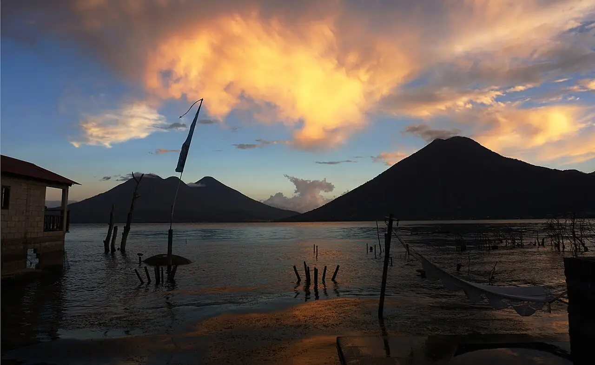

Lac Atitlán — San Marcos La Laguna
Sololá, Guatemala · kayak, paddle, baignade

Lac volcanique d’altitude dominé par les volcans San Pedro, Tolimán et Atitlán. À San Marcos La Laguna, la petite réserve du Cerro Tzankujil permet de se baigner depuis les rochers, et le calme du matin se prête au kayak et au paddle.
- Lieu
- Sololá, Guatemala
- Niveau
- Intermédiaire
- Activités
- kayak, paddle, baignade
- Type d'eau
- lake
- Coordonnées
- 14.72, -91.26 (position approximative du secteur)
Dangers à connaître
- Le Xocomil, vent de l’après-midi, forme des vagues courtes et fortes au milieu du lac.
- Altitude d’environ 1 560 m et eau fraîche : ménage tes efforts.
- Des proliférations d’algues ont déjà touché le lac : vérifie localement la qualité de l’eau.
Le conseil d'Ocean Buddy
Sors tôt : l’après-midi, le vent local appelé Xocomil lève souvent des vagues dangereuses pour les kayaks et les paddles.
Ouvrir dans Ocean Buddy Télécharger sur l'App Store
Source : Fiche Ocean Buddy · septembre 2026 · à vérifier localement.